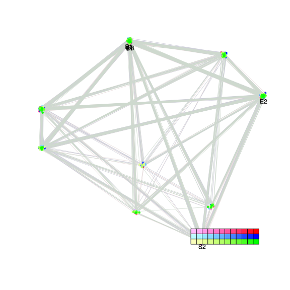
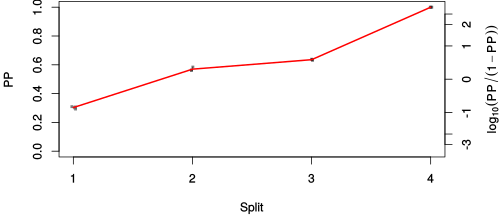
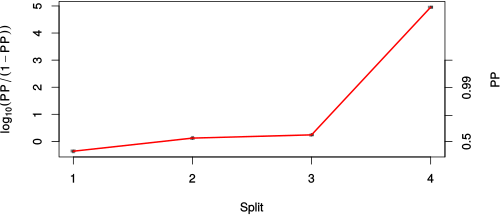

| chain # | burnin | subsample | Iterations (remaining) | command line | subdirectory | directory |
|---|---|---|---|---|---|---|
| 1 | 10000 | 1 | 90000 | bali-phy cat_E6_E7_AA_red3_Lambda.fas -s 63215 -n Lambda_c1 | Lambda_c1-1 | /DATA/work/ONCOGENEVOL/database/trees/Bali-Phy/red3/cat_E6_E7 |
| 2 | 10000 | 1 | 90000 | bali-phy cat_E6_E7_AA_red3_Lambda.fas -s 23163 -n Lambda_c2 | Lambda_c2-1 | /DATA/work/ONCOGENEVOL/database/trees/Bali-Phy/red3/cat_E6_E7 |
| 3 | 10000 | 1 | 90000 | bali-phy cat_E6_E7_AA_red3_Lambda.fas -s 79832 -n Lambda_c3 | Lambda_c3-1 | /DATA/work/ONCOGENEVOL/database/trees/Bali-Phy/red3/cat_E6_E7 |
| P(data|M) = -3654.121 +- 0.120 | Complete sample: 9 topologies | 95% Bayesian credible interval: 8 topologies |
Phylogeny Distribution

| Partition support: Summary |
| Partition support graph: SVG |
{kind=link}
| 50% consensus | Newick (+PP) | SVG | |||||
| 66% consensus | Newick (+PP) | SVG | |||||
| 80% consensus | Newick (+PP) | SVG | |||||
| 90% consensus | Newick (+PP) | SVG | |||||
| 95% consensus | Newick (+PP) | SVG | |||||
| 99% consensus | Newick (+PP) | SVG | |||||
| 100% consensus | Newick (+PP) | SVG | |||||
| MAP | Newick (+PP) | SVG | |||||
| greedy | Newick (+PP) | SVG |
{kind=link}
{kind=link}
{kind=link}
{kind=link}
{kind=link}
{kind=link}
{kind=link}
{kind=link}
Alignment Distribution
Partition 1
| Diff | Min. %identity | # Sites | Constant | Informative | ||||
|---|---|---|---|---|---|---|---|---|
| Initial | FASTA | HTML | Diff | 2.71% | 369 | 1 (0.271%) | 65 (17.6%) | |
| Best (WPD) | FASTA | HTML | AU | 16.7% | 415 | 23 (5.54%) | 75 (18.1%) |
Mixing
{kind=link}
{kind=link}
| burnin (scalar) | ESS (scalar) | ESS (partition) | ASDSF | MSDSF | PSRF-CI80% | PSRF-RCF |
|---|---|---|---|---|---|---|
| 814 | 5815 | 3916.128 | 0.005 | 0.013 | 1 | 1.009 |
Projection of RF distances for the first 3 chains3D | Variation of split PPs across chains |
Scalar variables
| Statistic | Median | 95% BCI | ACT | ESS | burnin | PSRF-CI80% | PSRF-RCF |
|---|---|---|---|---|---|---|---|
| prior | -271.9 | (-315.7, -233.4) | 44.35 | 6087 | 536 | 1 | 1.001 |
| prior_A1 | -251 | (-293.8, -213.9) | 29.36 | 9195 | 197 | 1 | 1.002 |
| likelihood | -3635 | (-3655, -3613) | 15.45 | 17474 | 152 | 1 | 1.002 |
| logp | -3907 | (-3942, -3877) | 46.43 | 5815 | 391 | 0.9999 | 1.001 |
| Heat.beta | 1 | ||||||
| Scale1 | 3.482 | (1.461, 6.635) | 1 | 270003 | 98 | 1 | 1.001 |
| S1.F.pi.A | 0.05942 | (0.04653, 0.07347) | 7.753 | 34824 | 144 | 0.9992 | 1.001 |
| S1.F.pi.R | 0.0577 | (0.04392, 0.07214) | 7.751 | 34833 | 237 | 1 | 0.9983 |
| S1.F.pi.N | 0.03206 | (0.02234, 0.04249) | 8.083 | 33402 | 352 | 1 | 1.009 |
| S1.F.pi.D | 0.04871 | (0.03654, 0.06182) | 8.659 | 31180 | 581 | 1 | 1.004 |
| S1.F.pi.C | 0.06172 | (0.04569, 0.07926) | 8.966 | 30113 | 350 | 0.9998 | 0.9962 |
| S1.F.pi.Q | 0.04139 | (0.03132, 0.05264) | 8.686 | 31085 | 283 | 1 | 0.9988 |
| S1.F.pi.E | 0.07294 | (0.05759, 0.08954) | 8.37 | 32258 | 513 | 0.9999 | 0.9993 |
| S1.F.pi.G | 0.07667 | (0.05917, 0.09575) | 8.654 | 31200 | 396 | 1 | 1.001 |
| S1.F.pi.H | 0.02509 | (0.01645, 0.03483) | 8.137 | 33183 | 546 | 1 | 1.005 |
| S1.F.pi.I | 0.03935 | (0.02901, 0.0505) | 8.315 | 32471 | 349 | 1 | 0.9975 |
| S1.F.pi.L | 0.1226 | (0.1021, 0.1443) | 7.767 | 34763 | 509 | 0.9995 | 1 |
| S1.F.pi.K | 0.03672 | (0.0266, 0.04765) | 7.979 | 33840 | 254 | 1 | 0.9962 |
| S1.F.pi.M | 0.006932 | (0.002989, 0.01193) | 8.16 | 33088 | 814 | 0.9997 | 1.002 |
| S1.F.pi.F | 0.04518 | (0.03272, 0.05862) | 8.181 | 33005 | 369 | 1 | 1.003 |
| S1.F.pi.P | 0.05385 | (0.03961, 0.06903) | 7.981 | 33832 | 257 | 1 | 1.006 |
| S1.F.pi.S | 0.06918 | (0.05503, 0.08458) | 8.149 | 33134 | 392 | 0.9998 | 0.9925 |
| S1.F.pi.T | 0.05112 | (0.0387, 0.06426) | 7.829 | 34487 | 270 | 0.9998 | 0.998 |
| S1.F.pi.W | 0.00666 | (0.002046, 0.01267) | 8.599 | 31399 | 298 | 0.9998 | 0.9938 |
| S1.F.pi.Y | 0.02523 | (0.01589, 0.03553) | 7.989 | 33796 | 312 | 1 | 1.001 |
| S1.F.pi.V | 0.06203 | (0.04849, 0.07667) | 8.017 | 33678 | 373 | 1 | 1.004 |
| I1.RS07.meanIndelLengthMinus1 | 5.801 | (3.665, 8.542) | 9.231 | 29249 | 106 | 1 | 0.9999 |
| I1.RS07.logLambda | -4.162 | (-4.617, -3.764) | 5.81 | 46469 | 117 | 1 | 0.9992 |
| |A1| | 411 | (398, 428) | 17.79 | 15175 | 282 | 0.95 | 1.002 |
| #indels1 | 29 | (23, 35) | 33.73 | 8005 | 144 | 0.96 | 1.001 |
| |indels1| | 207 | (182, 242) | 12.75 | 21176 | 268 | 0.9762 | 1.002 |
| #substs1 | 605 | (586, 618) | 13.04 | 20707 | 127 | 0.9524 | 1.002 |
| Scale1*|T| | 4.305 | (3.88, 4.746) | 2.798 | 96481 | 183 | 0.9998 | 1.001 |
| |A| | 411 | (398, 428) | 17.79 | 15175 | 282 | 0.95 | 1.002 |
| #indels | 29 | (23, 35) | 33.73 | 8005 | 144 | 0.96 | 1.001 |
| |indels| | 207 | (182, 242) | 12.75 | 21176 | 268 | 0.9762 | 1.002 |
| #substs | 605 | (586, 618) | 13.04 | 20707 | 127 | 0.9524 | 1.002 |
| |T| | 1.237 | (0.4917, 2.241) | 1.007 | 268185 | 107 | 1 | 1.001 |